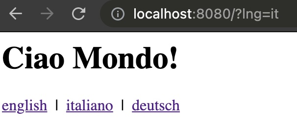

We will show some examples that uses i18next as i18n framework. If you're curious to know why we suggest i18next, have a look at this page.
Command line interface (CLI)
Let's start with something simple: a verry small CLI app. For this example let's use commander, originally created by TJ Holowaychuk.
We are defining a sayhi command with optional language and name parameters that should respond with a salutation in the appropriate language.
program .command('sayhi') .alias('s') .option('-l, --language <lng>', 'by default the system language is used') .option('-n, --name <name>', 'your name') .action((options) => { // options.language => optional language // options.name => optional name // TODO: log the salutation to the console... }) .on('--help', () => { console.log(' Examples:') console.log() console.log(' $ mycli sayhi') console.log(' $ mycli sayhi --language de') console.log(' $ mycli sayhi --language de --name John') console.log() })
program.parse(process.argv)
if (!process.argv.slice(2).length) { program.outputHelp() }
Ok, now let's create a new i18n.js file and setup i18next accordingly:
1 2 3 4 5 6 7 8 9 10 11 12 13 14 15 16 17 18 19
const i18next = require('i18next')
// if no language parameter is passed, let's try to use the node.js system's locale const systemLocale = Intl.DateTimeFormat().resolvedOptions().locale
const program = require('commander') const i18n = require('../i18n.js')
program .command('sayhi') .alias('s') .option('-l, --language <lng>', 'by default the system language is used') .option('-n, --name <name>', 'your name') .action((options) => { const t = i18n(options.language) if (options.name) { console.log(t('salutationWithName', { name: options.name })) } else { console.log(t('salutation')) } }) .on('--help', () => { console.log(' Examples:') console.log() console.log(' $ mycli sayhi') console.log(' $ mycli sayhi --language de') console.log(' $ mycli sayhi --language de --name John') console.log() })
program.parse(process.argv)
if (!process.argv.slice(2).length) { program.outputHelp() }
Ok, what's the result?
1 2 3 4 5 6 7 8 9 10 11
# if we execute the cli command without any parameters... mycli sayhi # result: Hello World!
# if we execute the cli command with a language parameter... mycli sayhi --language de # result: Hallo Welt!
# if we execute the cli command with a language parameter and a name parameter... mycli sayhi --language de --name John # result: Hallo John!
Easy, isn't it?
If you don't bundle your CLI app in a single executable, for example by using pkg, you can also i.e. use the i18next-fs-backend to dynamically load your translations, for example like this:
// if no language parameter is passed, let's try to use the node.js system's locale const systemLocale = Intl.DateTimeFormat().resolvedOptions().locale
A possible next step could be to professionalize the translation management.
This means the translations would be "managed" (add new languages, new translations etc...) in a translation management system (TMS), like locize and synchronized with your code. To see how this could look like, check out Step 1 in this tutorial.
Generate Emails
Another typical server side use case that requires internationalization is the generation of emails.
To achieve this goal, you usually need to transform some raw data to html content (or text) to be shown in the user's preferred language.
In this example we will use pug (formerly known as "Jade", and also originally created by TJ Holowaychuk) to define some templates that should be filled with the data needed in the email, and mjml to actually design the email content.
Let's create a new mail.js file, which we can use, to accomplish this.
1 2 3 4 5 6 7 8 9 10 11 12 13 14
import pug from'pug' import mjml2html from'mjml'
exportdefault (data) => { // first let's compile and render the mail template that will include the data needed to show in the mail content const mjml = pug.renderFile('./mailTemplate.pug', data) // then transform the mjml syntax to normal html const { html, errors } = mjml2html(mjml) if (errors && errors.length > 0) thrownewError(errors[0].message)
// and return the html, if there where no errors return html }
i18next .use(Backend) // you can also use any other i18next backend, like i18next-http-backend or i18next-locize-backend .init({ // debug: true, initImmediate: false, // setting initImediate to false, will load the resources synchronously fallbackLng: 'en', preload: readdirSync(localesFolder).filter((fileName) => { const joinedPath = join(localesFolder, fileName) return lstatSync(joinedPath).isDirectory() }), backend: { loadPath: join(localesFolder, '{{lng}}/{{ns}}.json') } })
exportdefault i18next
So finally, all the above can be used like that:
1 2 3 4 5 6 7 8 9
import mail from'./mail.js'
import i18next from'./i18n.js'
const html = mail({ t: i18next.t, name: 'John' }) // that html now can be sent via some mail provider...
This time we will use a different i18next module, i18next-http-middleware.
It can be used for all Node.js web frameworks, like express or Fastify, but also for Deno web frameworks, like abc or ServestJS.
As already said, here we will use Fastify, my favorite 😉.
i18next .use(i18nextMiddleware.LanguageDetector) // the language detector, will automatically detect the users language, by some criteria... like the query parameter ?lng=en or http header, etc... .use(Backend) // you can also use any other i18next backend, like i18next-http-backend or i18next-locize-backend .init({ initImmediate: false, // setting initImediate to false, will load the resources synchronously fallbackLng: 'en', preload: readdirSync(localesFolder).filter((fileName) => { const joinedPath = join(localesFolder, fileName) return lstatSync(joinedPath).isDirectory() }), backend: { loadPath: join(localesFolder, '{{lng}}/{{ns}}.json') } })
// locales/en/translations.json { "home": { "title": "Hello World!" }, "server": { "started": "Server is listening on port {{port}}." } }
// locales/de/translations.json { "home": { "title": "Hallo Welt!" }, "server": { "started": "Der server lauscht auf dem Port {{port}}." } }
// locales/it/translations.json { "home": { "title": "Ciao Mondo!" }, "server": { "started": "Il server sta aspettando sul port {{port}}." } }
A simple pug template:
1 2 3 4 5 6 7 8 9 10 11
html head title i18next - fastify with pug body h1=t('home.title') div a(href="/?lng=en") english | | a(href="/?lng=it") italiano | | a(href="/?lng=de") deutsch
app.listen(port, (err) => { if (err) returnconsole.error(err) // if you like you can also internationalize your log statements ;-) console.log(i18next.t('server.started', { port })) console.log(i18next.t('server.started', { port, lng: 'de' })) console.log(i18next.t('server.started', { port, lng: 'it' })) })
Now start the app and check what language you're seeing...

If you check the console output you'll also see something like this:
1 2 3 4
node app.js # Server is listening on port 8080. # Der server lauscht auf dem Port 8080. # Il server sta aspettando sul port 8080.
Yes, if you like, you can also internationalize your log statements 😁
make sure your Fastify app is exported... (export default app)
And only start to listen on a port, if not executed in AWS Lambda (import.meta.url === 'file://${process.argv[1]}' or require.main === module for CommonJS)
When it comes to internationalization of Next.js apps one of the most popular choices is next-i18next. It is based on react-i18next and users of next-i18next by default simply need to include their translation content as JSON files and don't have to worry about much else.
You just need a next-i18next.config.js file that provides the configuration for next-i18next and wrapping your app with the appWithTranslation function, which allows to use the t (translate) function in your components via hooks.
// index.js import { useTranslation } from'next-i18next' import { serverSideTranslations } from'next-i18next/serverSideTranslations' // This is an async function that you need to include on your page-level components, via either getStaticProps or getServerSideProps (depending on your use case)
To best manage the translations there are 2 different approaches:
POSSIBILITY 1: live translation download
When using locize, you can configure your next-i18next project to load the translations from the CDN (on server and client side).
Such a configuration could look like this:
1 2 3 4 5 6 7 8 9 10 11 12 13 14 15 16 17 18 19
// next-i18next.config.js module.exports = { i18n: { defaultLocale: 'en', locales: ['en', 'de'], }, backend: { projectId: 'd3b405cf-2532-46ae-adb8-99e88d876733', // apiKey: 'myApiKey', // to not add the api-key in production, used for saveMissing feature referenceLng: 'en' }, use: [ require('i18next-locize-backend/cjs') ], ns: ['common', 'footer', 'second-page'], // the namespaces needs to be listed here, to make sure they got preloaded serializeConfig: false, // because of the custom use i18next plugin // debug: true, // saveMissing: true, // to not saveMissing to true for production }
Here you'll find more information and an example on how this looks like.
There is also the possibility to cache the translations locally thanks to i18next-chained-backend. Here you can find more information about this option.
If you're deploying your Next.js app in a serverless environment, consider to use the second possibility...More information about the reason for this can be found here.
POSSIBILITY 2: bundle translations and keep in sync
If you're not sure, choose this way.
This option will not change the configuration of your "normal" next-i18next project:
Just download or sync your local translations before "deploying" your app.
Here you'll find more information and an example on how this looks like.
You can, for example, run an npm script script (or similar), which will use the cli to download the translations from locize into the appropriate folder next-i18next is looking in to (i.e. ./public/locales). This way the translations are bundled in your app and you will not generate any CDN downloads during runtime.
i.e. locize download --project-id=d3b405cf-2532-46ae-adb8-99e88d876733 --ver=latest --clean=true --path=./public/locales
🎉🥳 Conclusion 🎊🎁
As you see i18n is also important on server side.
I hope you’ve learned a few new things about server side internationalization and modern localization workflows.
So if you want to take your i18n topic to the next level, it's worth to try i18next and also locize.